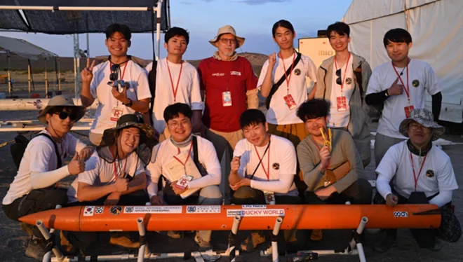

Spaceport America Cup 2023
HARANG
하랑 · 사운딩 로켓
10,000 ft 비행과 3U CubeSat 규격 페이로드 분리를 목표로 개발했습니다. 2023년 6월 실제 비행에서 최고 고도 2,009 m를 기록했고 비행 데이터를 지상국으로 실시간 전송했습니다.
GFRP 노즈콘과 커플러는 진공 보조 수지 주입(VARI) 공법으로 자체 제작했고, CFRP 핀은 평판을 워터젯 가공해 완성했습니다. 목표 고도에는 미치지 못했으며 사후 비행 분석 결과를 IAC 2023에서 발표했습니다.
Target Altitude3,048 m
Achieved Apogee2,009 m
- 실시간 비행 데이터 텔레메트리 성공
- GFRP 노즈콘·커플러 VARI 제작, CFRP 핀 워터젯 가공
- 개발 및 비행 분석 결과 IAC 2023 발표
- 임무
- Sounding Rocket
- 목표 고도
- 10,000 ft / 3,048 m
- 실제 최고 고도
- 2,009 m
- 페이로드 목표
- 3U CubeSat 규격
- 통신 결과
- 실시간 전송 성공
- 무대
- Spaceport America Cup 2023